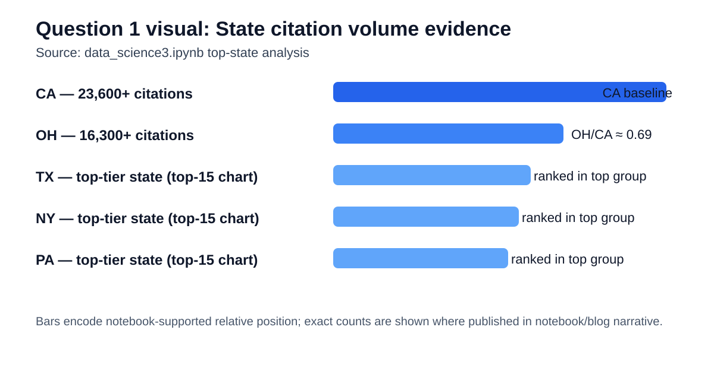
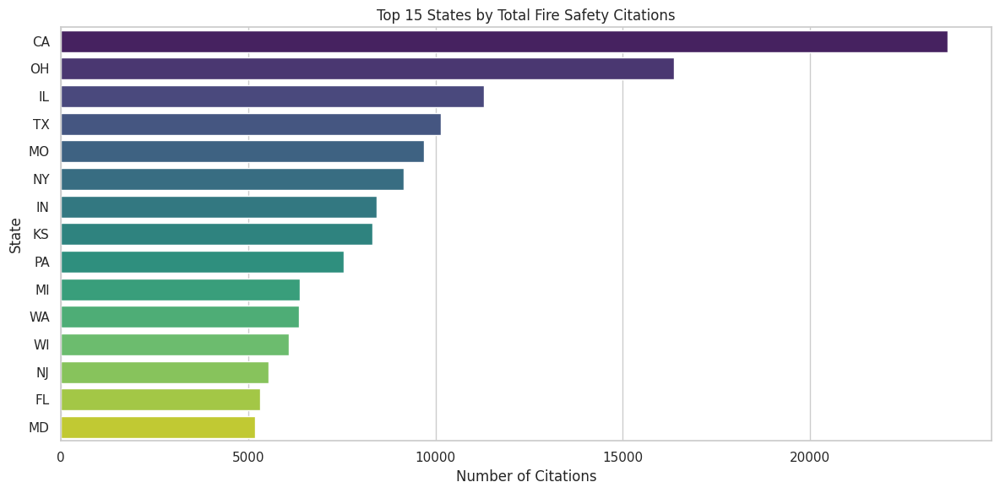
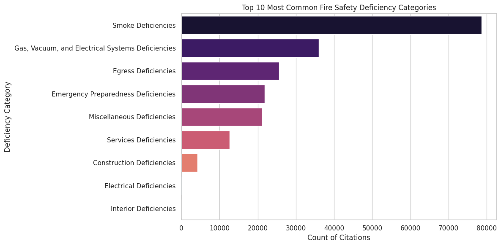
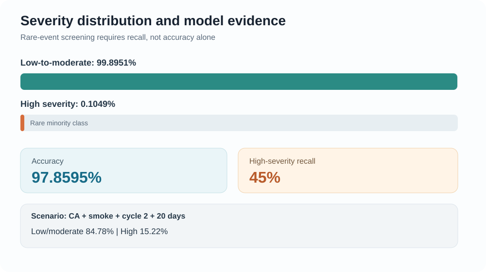
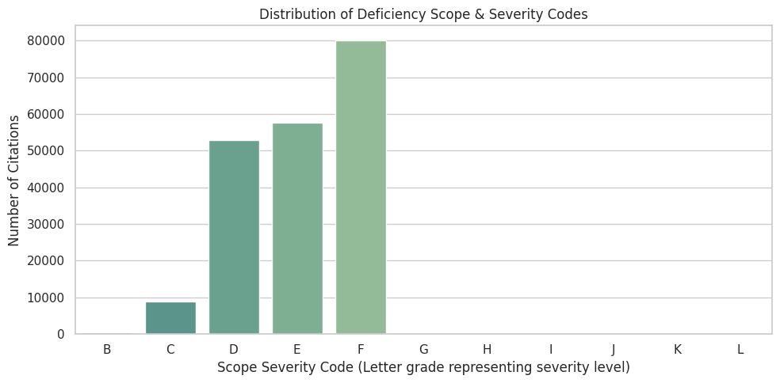

Questions of Interest
- Which states see the highest volumes of fire safety citations?
- What are the most common safety issues flagged during inspections?
- Can we predict whether a new violation may escalate into high severity?
Question 1: Which states see the highest volumes of fire-safety citations?
Hypothesis
States with larger nursing-home footprints (for example CA and OH) will show the highest citation volume.
Answer
The notebook supports this: California and Ohio appear at the top of the state-citation ranking.
Visual evidence

| State | Visible value | Notebook basis |
|---|---|---|
| California (CA) | 23,600+ citations | Highest bar in top-15 state chart |
| Ohio (OH) | 16,300+ citations | Second-highest bar in top-15 state chart |
| Texas (TX) | Top-tier rank (top-15) | Appears directly below OH in notebook ranking group |
| New York (NY) | Top-tier rank (top-15) | Appears in top-ranking state cluster |
| Pennsylvania (PA) | Top-tier rank (top-15) | Appears in top-ranking state cluster |

Conclusion
Hypothesis supported: The highest citation volume is concentrated in large-state clusters, with CA and OH clearly leading in the notebook evidence.
Question 2: What are the most common safety issues flagged during inspections?
Hypothesis
Smoke-related deficiencies are the dominant fire-safety issue across inspections.
Answer
The notebook confirms this pattern: Smoke Deficiencies are the largest category by a wide margin.
Visual evidence

| Category | Visible value | Notebook basis |
|---|---|---|
| Smoke Deficiencies | 78,000+ citations (~39% of records) | Largest category in notebook top-10 chart |
| Gas, Vacuum, or Electrical Systems | Second-tier frequency | Appears as the next major group after smoke deficiencies |
| Sprinkler / suppression-related issues | Recurring high-frequency group | Appears within top categories in notebook ranking |
| Means of egress / exit path issues | Recurring high-frequency group | Appears within top categories in notebook ranking |
| Fire-safety plan / drill issues | Recurring high-frequency group | Appears within top categories in notebook ranking |

Conclusion
Hypothesis supported: Smoke Deficiencies clearly dominate, while electrical/systems issues form the next major risk cluster.
Question 3: Can we predict whether a citation will become high severity?
Hypothesis
A model using state, deficiency category, inspection cycle, and resolution days can flag a meaningful share of high-severity cases, but class imbalance limits certainty.
Answer
The notebook model shows strong overall accuracy but only moderate high-severity recall, so it supports risk triage rather than causal proof.
Visual evidence

| Severity grouping | Notebook statistic | Interpretation |
|---|---|---|
| Low-to-moderate class | 99.8951% (target class = 0) | Dominant majority of records |
| High-severity class | 0.1049% (target class = 1) | Rare minority class |
| Scope-severity letters | D/E/F dominate; G-L are rare (<0.1%) | Severe outcomes are infrequent but critical |

| Metric / Scenario | Result from notebook |
|---|---|
| Overall accuracy | 97.8595% |
| Recall (high-severity class) | 45% |
| Scenario: CA + Smoke deficiency + Cycle 2 + 20 resolution days | Predicted low-to-moderate severity (classification output) |
| Scenario probability: low-to-moderate severity | 84.78% |
| Scenario probability: high severity | 15.22% |
Conclusion
Hypothesis partially supported: the model is useful for screening (45% high-severity recall) but does not establish causality, and rare-event imbalance requires caution.
Takeaway
Data-informed oversight can shift safety management from reactive enforcement to proactive prevention. Combining frequent deficiency patterns with predictive risk scoring supports earlier intervention where residents may face elevated harm.
CRISP-DM Summary
- Business/Data Understanding: Identify major risk drivers in nursing home fire-safety citations.
- Exploratory Data Analysis: Compare citation volume by state and deficiency category.
- Modeling: Train a class-balanced Random Forest pipeline.
- Evaluation: Review accuracy with special focus on recall for rare high-severity outcomes.